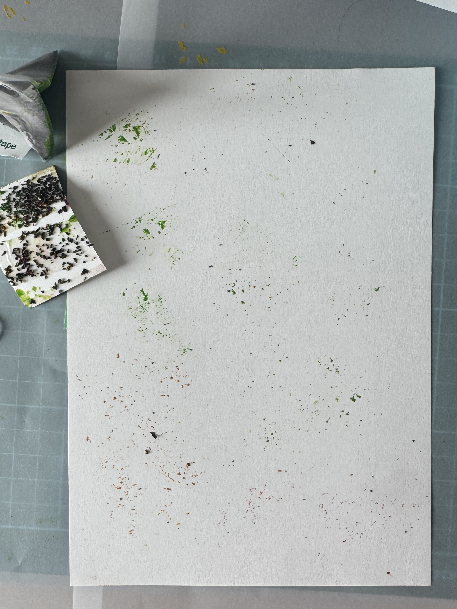
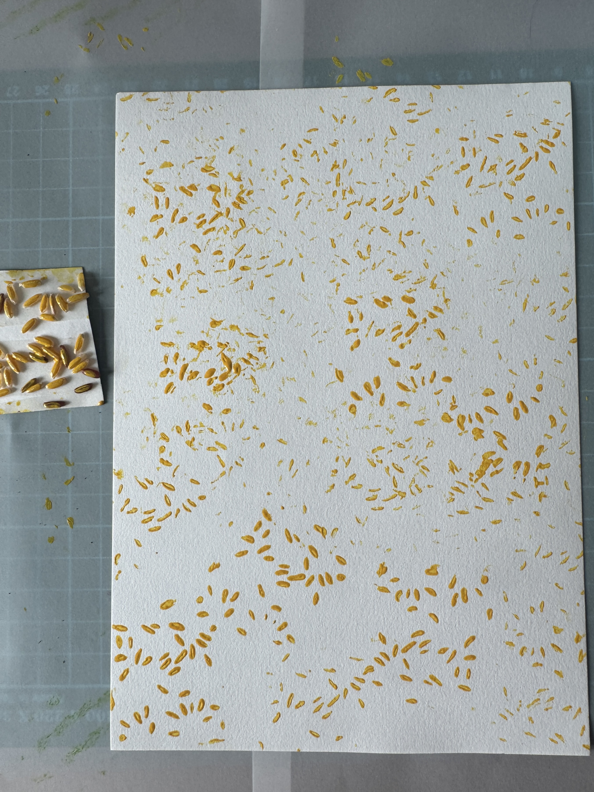
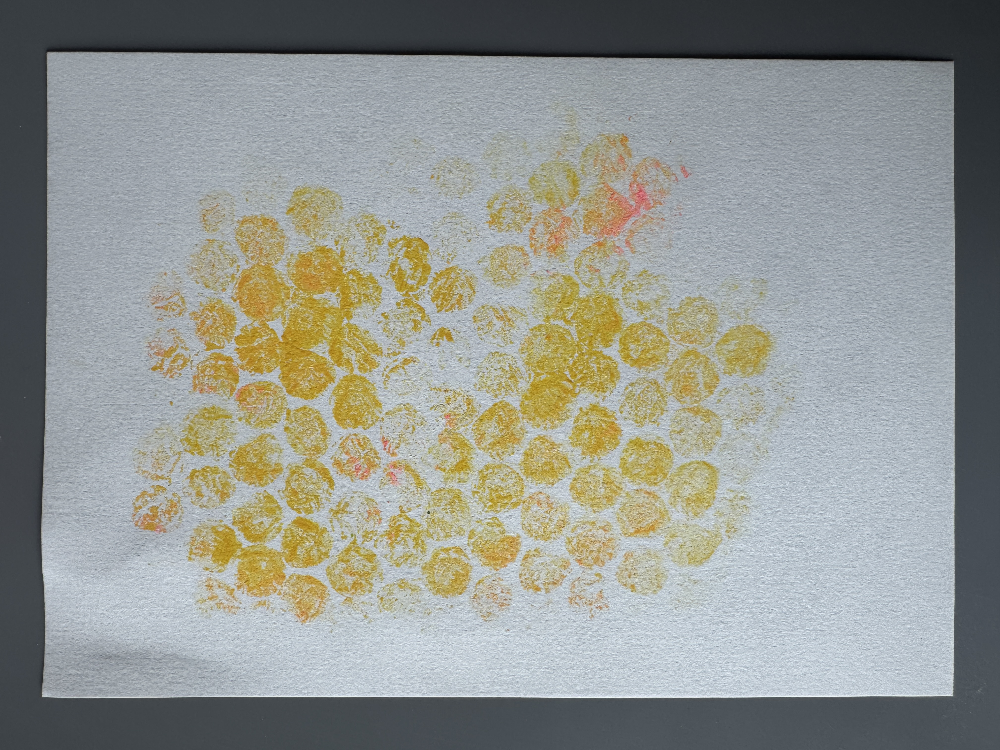
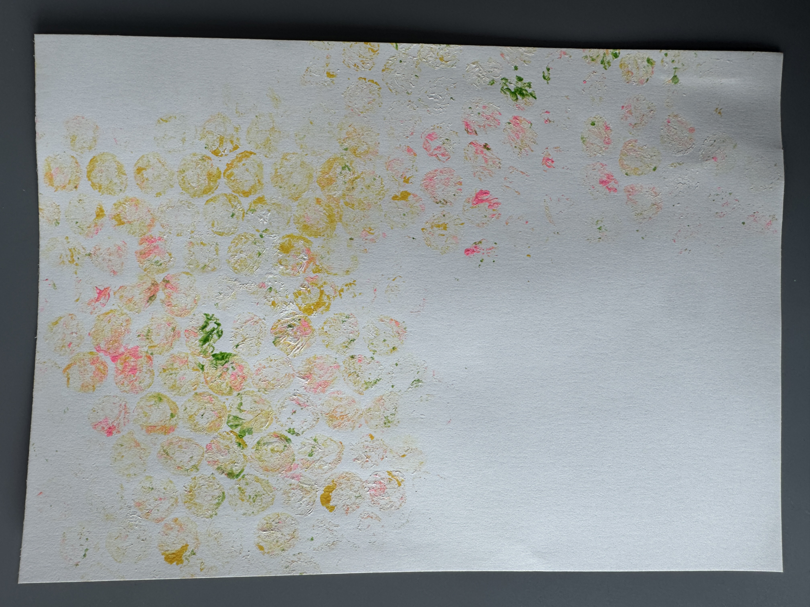
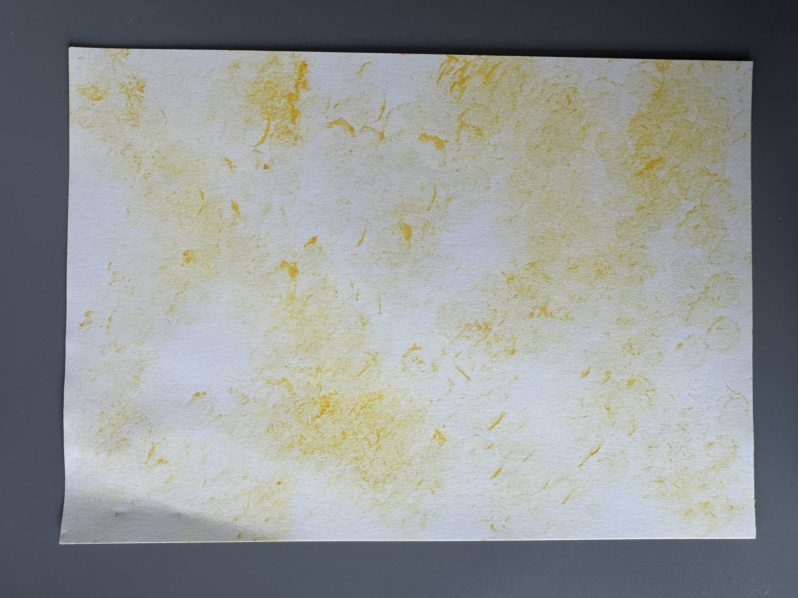
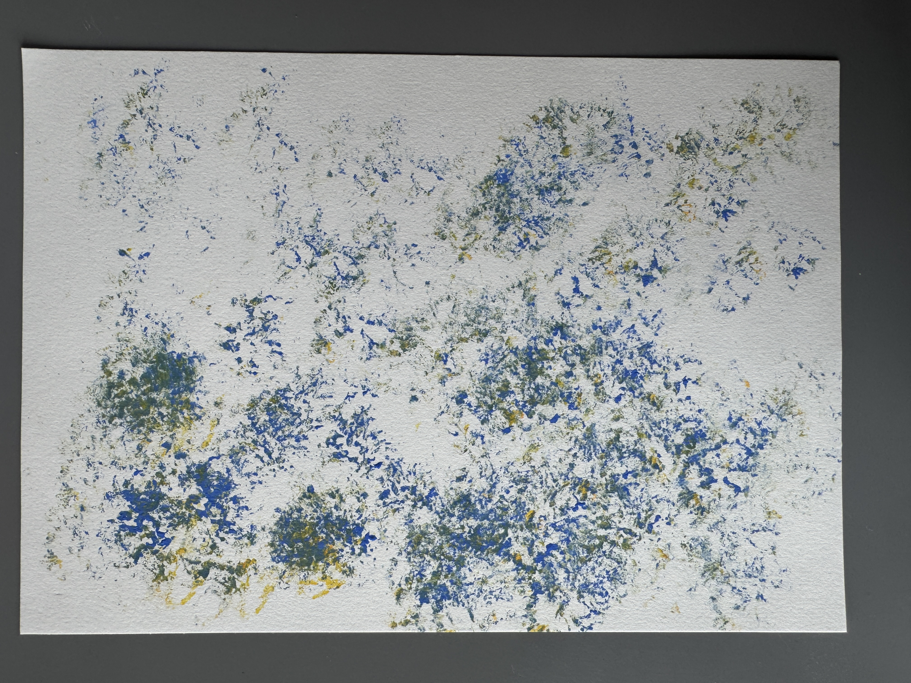
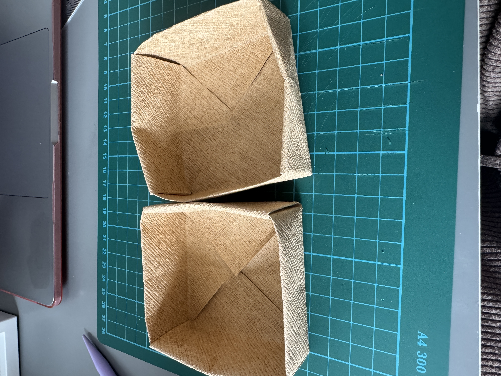
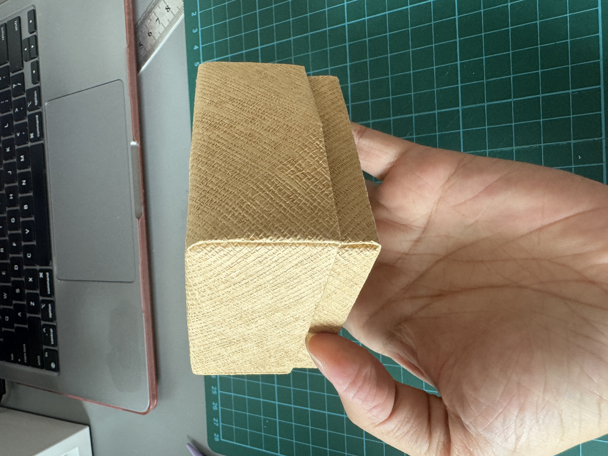
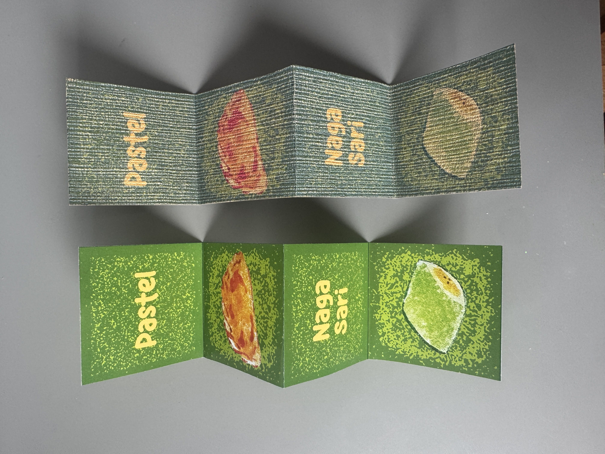
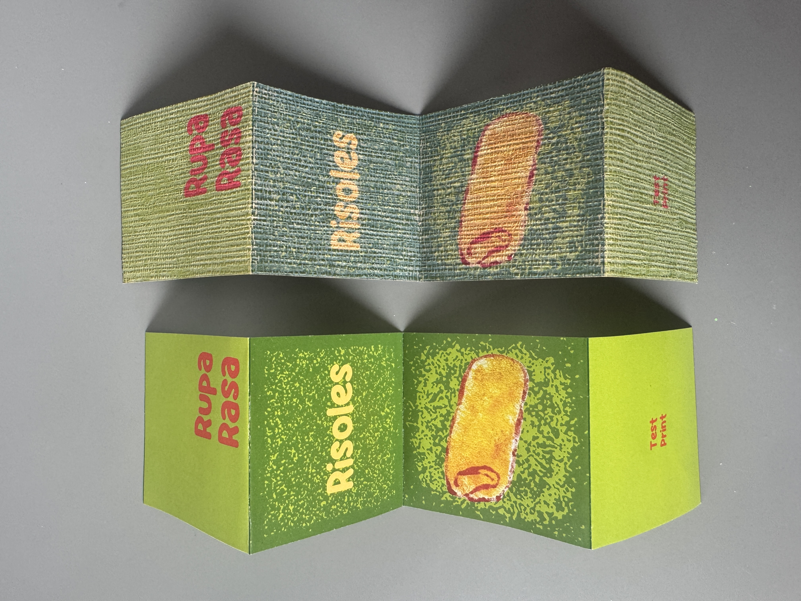

Print Explorations


This week, I wanted to use real food to make stamps, such as tea leaves and rice grains. The way I managed to make a stamp of the food was by using double-sided tape on the paper and sticking it to the rice and leaves so it would stay in place. After doing the stamp, I noticed that the rice grain is more visible than the leaves. The leaves look like tiny splatters of paint compared to the grain, where you can see the actual outline of the rice.
This was a fun exploration that I tried to make work, but in the end it didn’t. Although this experiment failed, I at least managed to come out with an outcome. When I was doing this process, I didn’t know if it was going to work, and it didn’t, but it did teach me to look into more creative ways of doing food explorations.


Since this week I wanted to use real materials, I thought of using bubble wrap to represent oil because the form of the bubble wrap itself is similar to oil because it is made up of small circles. So I added paint to the bubble wrap and stamped it onto paper. In the outcome on the right, I mixed in some colors to see if the print changed. Overall, it does create a unique outcome, but it doesn’t remind me of oil; it just looks like bubble wrap, but it was still a good effort to try.


For these two outcomes, I did use a sea sponge to create the prints. For the one on the left, I did use bubble wrap, so there are some circular stamps, but the one on the right is purely sea sponge. I do find the one on the right more interesting compared to the one on the left because it leaves this organic texture, you can see the ridges from the sea sponge. Also, with the mix of colors I use, it creates a unique form.
Crafts


From the outside, the box itself looks fine, but when it is opened, you can see that some parts of the box are flimsy. That’s because the paper that I was using to create the box isn't thick enough, so it doesn’t have enough support to stay stable. The paper that I was using is bamboo paper. Since I’m experimenting with texture, I thought it would fit in if I also used textured paper for the box.


I also thought about making a small zine to showcase the different variety of snacks in jajanan pasar. I’ve thought about putting in the snack itself and the name of the snack above it. For example, the word Pastel, and below it would be the snack itself. I’ve tested on two different papers: one is normal matte paper, and the other is textured paper. I like how the textured paper is more tactile, but the color seems diluted, so it doesn’t look good overall. Compared to the normal paper, it looks brighter and has a better outcome, even though it's not tactile.
Reflection
I think it's good that I’m using real materials and putting them into my explorations. It’s a completely different process compared to when I'm doing lino or stencil work. However it is very restrictive, there isn’t much i can do with using real materials because it's already made. By doing this experiment, I realized I would much prefer to stick with stencils and lino because they give me more creative freedom to come up with more outcomes.
I think for the crafts, I would not explore more of it now because I wanted to focus more on the linos, stencil, and so on. Adding in more tasks like crafts would only slow down the process, and because I'm very limited with time, it’s better to do things that I can make more progress on. I think I'd leave crafts for semester two, although it's good that I’ve thought about it.